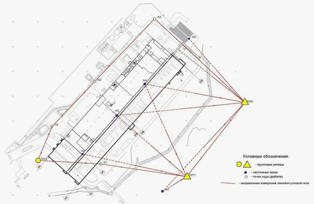

Акты освидетельствования геодезической разбивочной основы ОКС и акты разбивки осей ОКС на местности

Как составить акт приема ГРО
Геодезическая разбивочная основа (ГРО) в строительстве — это сеть хорошо закрепленных на местности вокруг строительного объекта пунктов, которые позволяют проводить общестроительные работы с высокой точностью.
ГРО это сетка линий и опорных знаков со стороной 50 м, 100 или 200 м – в зависимости от площади строительной площадки. От качества разработки ГРО зависит точность строительства и безопасность эксплуатации объекта.

На схеме ГРО указываются все пункты, их координаты и высотные значения.
Цель составления Акта приемки ГРО – комиссионное освидетельствование топосъемки пунктов ГРО, которые определяют расположение объекта на участке
Если сделать это неправильно или не сделать совсем, – проектные линии объекта могут выйти за допустимые границы. Например, объект может выйти за красную линию. Или расстояние между объектами на участке, которое установили нормативно, будет нарушено, или плиты перекрытия не совпадут со стенами.
Смотрите ниже пример акта приемки ГРО. Интерактивные точки дают подсказки по его заполнению.
Как составить акт РО
Акт разбивки осей (РО) – дает полное представление об участниках строительных работ на начальном этапе, а также о документах, в соответствии с которыми произведена разбивка осей. При помощи этого акта в дальнейшем можно установить лиц, которые несут ответственность за постройку здания или сооружения.
Разбивку проводит геодезист, который должен перевести расчеты планов и чертежей на местность, создать правильную расстановку объекта.
Смотрите ниже как выглядит акт разбивки осей.
Формы актов принимаются по приказу № 344/пр от 16.05.2023.
Переходите к следующему уроку. В нем вы разберетесь что такое АОСР, как и для чего его нужно составлять.
Примечание на 24.09.2026. Пункт 5 Порядка ведения ИД по приказу Минстроя № 344/пр изменён приказом № 369/пр с 01.03.2026. Перед применением изложенных здесь требований сверьте актуальную редакцию: приказ № 344/пр, изменение № 369/пр. Исходный учебный текст не изменён.
{kind=link}